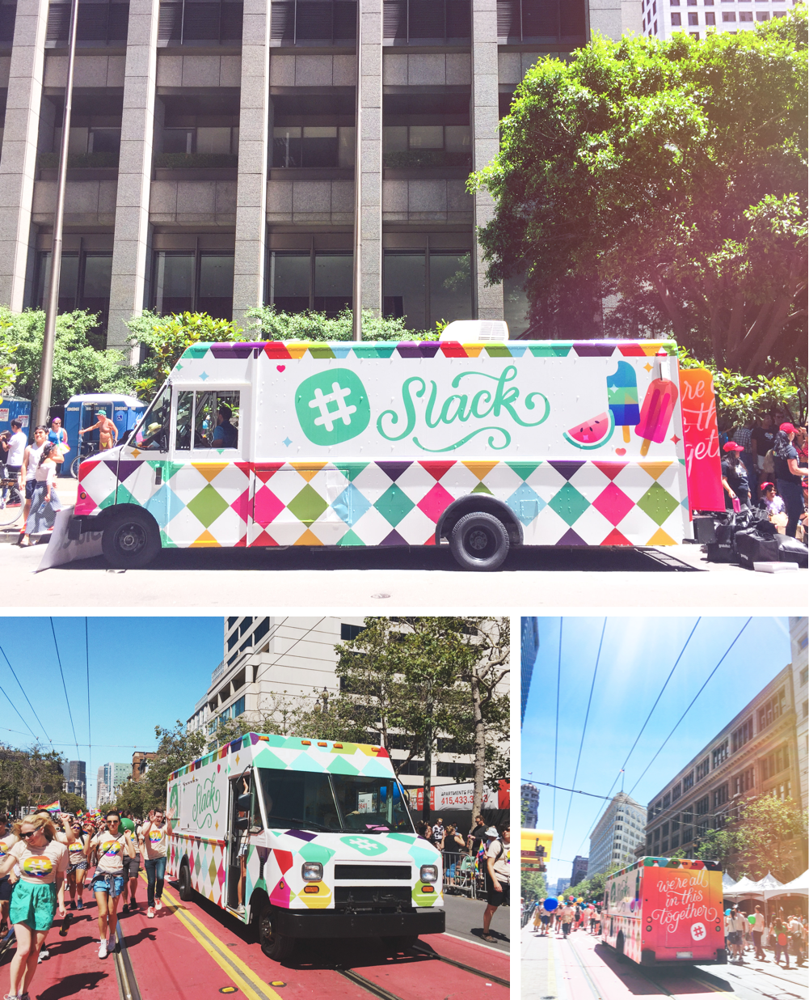
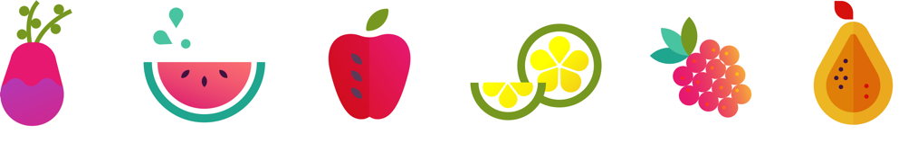
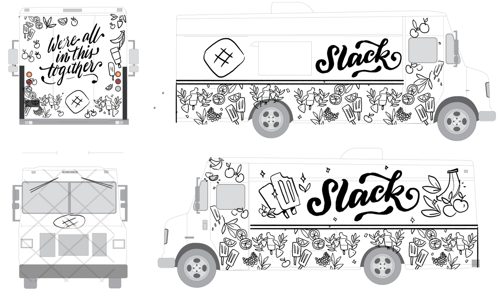
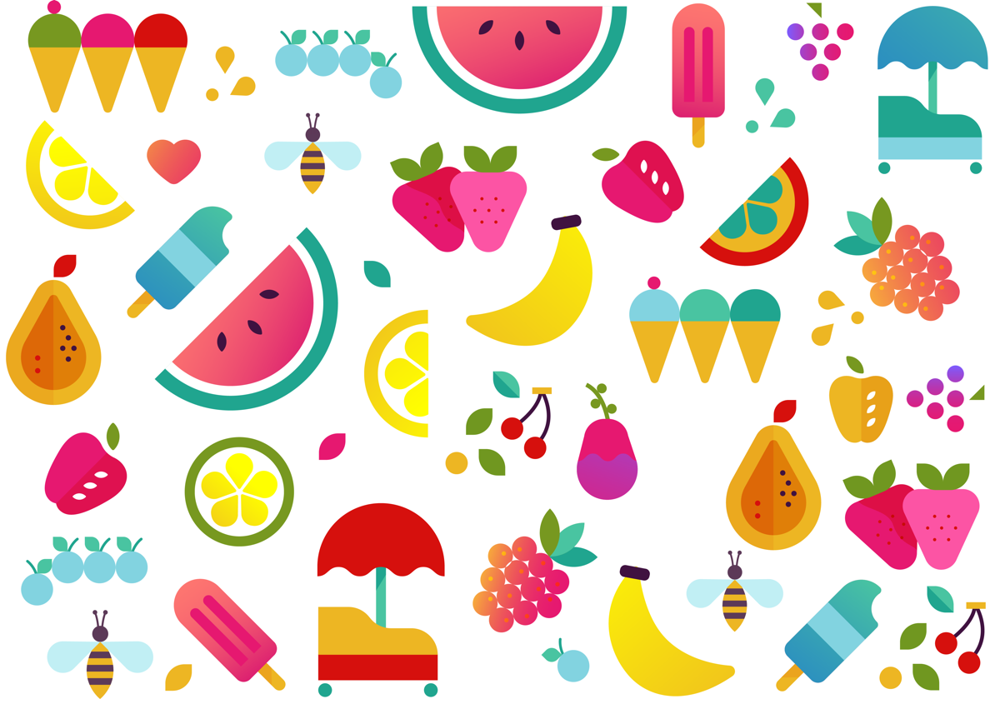
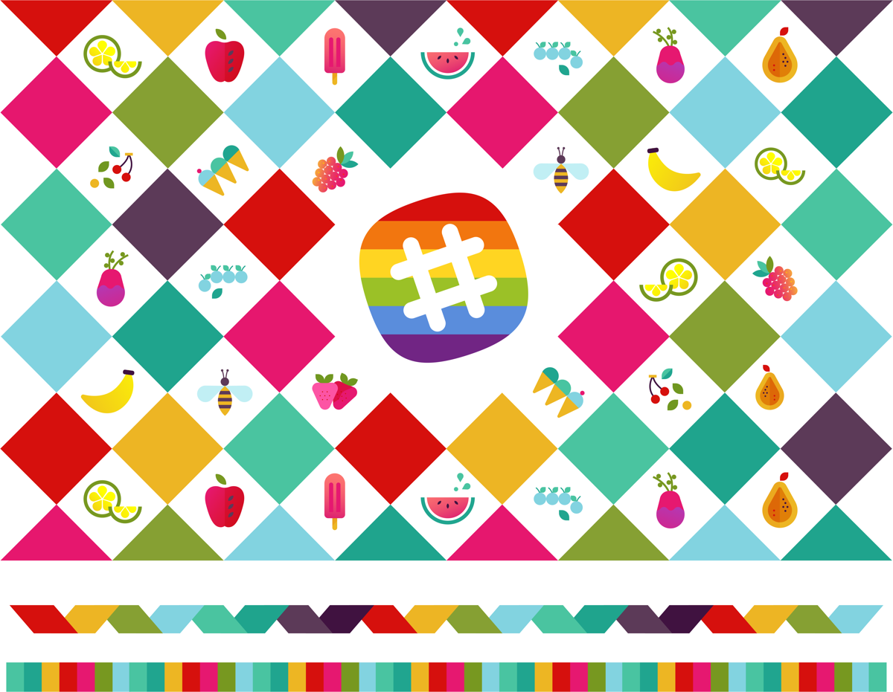
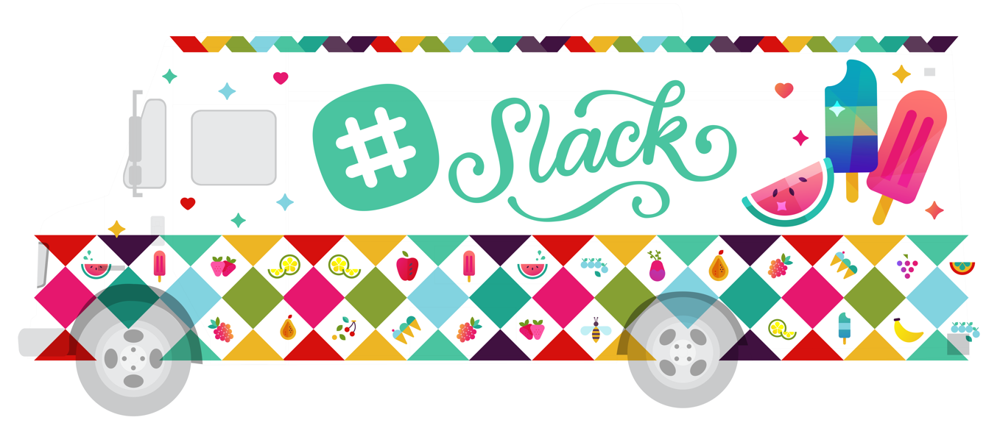
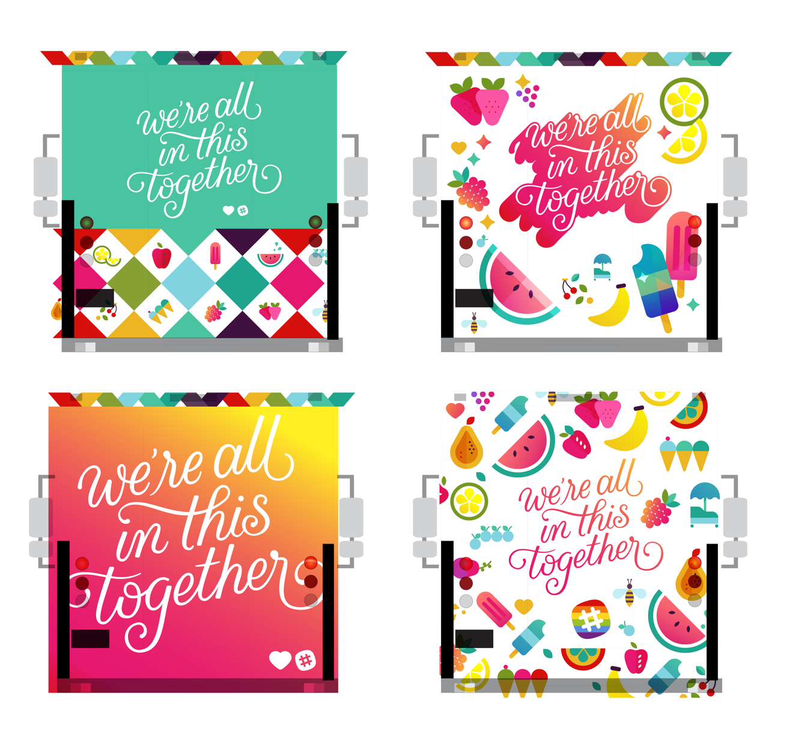
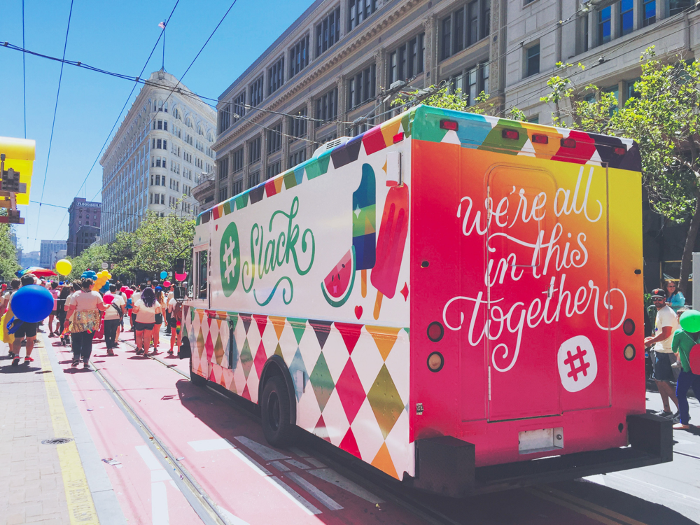

The making of an ice cream truck!
For the 2016 San Francisco Pride Parade, I designed an ice cream truck for Slack. Here's a look at the process from initial sketch to finished truck.
 Rainbows and sparkles
Since the original concept behind the ice cream truck was to, well, distribute ice cream, Lynn and I had the idea that the flavor options could be clearly identifiable on the outside of the truck — a "menu" of sorts. I always start with pencil sketches, and this pattern of bright fruity popsicles was the direction that we took to final.
Initial pencil sketches
When it came to creating the final artwork, the goal was to exude the joyfulness, acceptance, and celebration of Pride. As such, I had fun unleashing my inner Lisa Frank on this, creating juicy patterns of sparkly fruits and starry rainbow trimmings to my heart's content!
 With that, I set off to unleash my inner Lisa Frank, creating patterns of juicy fruits to my heart's content! The colors were loosely based on the Slack palette.
Side: Fruits, hearts, Lisa Frank-esque sparkles galore.
Back: A few playful options for the back of the truck — we ultimately went with the full-bleed, gigantic script in the bottom left.
Love is love
Please consider donating to organizations that continually advocate for and support LGBTQ+ rights, such as the Human Rights Campaign and The Trevor Project!